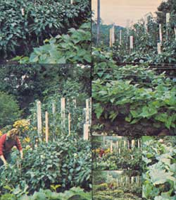
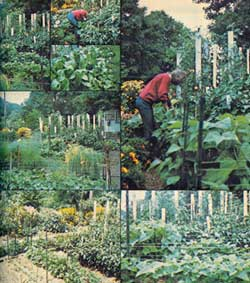

"They laughed last spring when I spread 60 bales of spoiled hay on my small (600 square feet) Connecticut garden," says Harold J. Ettelt, "but they're not laughing now!"
Our house was built on the site of an old rock and gavel quarry and, three years ago when we moved in, its backyard was a sloping and crabgrass-infested semi-desert. I leveled out the slope as best I could when I enlarged the building's basement but, needless to say, the cobbley fill that I spread on the yard didn't improve its fertility a great deal. (Or at all!)
"What this backyard needs," I told myself, "is anything organic that we can put our hands on." And-over the next two years, by using the town dump as a leaf, grass clipping, etc., supply depot and our Opel sedan for a pickup-we man aged to turn a few inches of the near-sterile dirt into a fairly good layer of topsoil. Good enough, at any rate, to grow a reasonably respectable garden.
Unfortunately for that garden, however, my wife soon talked me into building her some raised flowerbeds (beautiful, stone-lined beds made with all the rocks and boulders I'd dug out of the cellar and the backyard). And once those beds were finished, they had to be filled with something. And that "something" turned out to be my vegetable patch's precious topsoil . . . all of it, right down to the rocky clay underneath.
Well, I certainly didn't begrudge my better half that fertile dirt because I knew that her flowers needed good soil and that, once she'd planted her perennials, she wouldn't be able to dig them up every year to add humus. Besides, she likes flowers better than I like vegetables. Still, there was no denying that her passion for blossoms had moved my gardening right back to where I'd started. And I was in no mood to spend two more years regaining the ground (literally!) that I'd just lost.
I had almost given up hope of exercising my green thumb when a listing in the Pennysaver- a local advertising throwaway-saved the day. My postman, it seemed, had just what I needed: 60 bales of old hay that he wanted to sell at a reasonable price. I bought it all and he delivered the "spoiled hay" ("organic mulching material" to me) to my door.
Although I appreciated the delivery, I began to think it had been a mistake when the mailman looked over my 70 X 100-foot lot. "You mean you're going to spread all 60 bales on this little place?" he asked.
"Well, no," I replied. "Actually I'm only going to mulch about 600 square feet of garden space out back."
The postman, to say the least, was skeptical of my plans. And when some of my neighbors saw all that organic material stacked up in my drive and learned that I intended to put a whole big bale of the hay on each 10 square feet of vegetable patch, they were even more skeptical. A few, in fact, busted right out laughing!
I took some of the edge off at least the fellow-next-door's merriment by letting him pile my hay around his chickenhouse. (The bales kept his flock cozy at the same time that I regained the use of my driveway, so we both came out ahead.) And I kinda stayed out of everyone else's sight until winter blew itself away and I could get out into the garden again.
And that's exactly where I was bright and early the following spring. First I removed a two-inch layer of rather lifeless soil from the 600-square-foot vegetable patch. (This was very heavy work which was made no lighter by the fact that I separated out the larger stones and rocks-which were later used in a dry well-as I went along.) I then divided each of the bales of hay into quarters and laid the squares of compressed mulch side by side over the whole garden. And finally, I respread the two inches of dirt (that I had removed earlier) right over the top of the thick mats of organic matter. This meant that my vegetable plot's profile consisted of heavy, rocky, mineral subsoil . . . covered by a dense eight-inch layer of hay . . . and topped with two inches of heavy, not-so-rocky, mineral subsoil. Some garden!
By May, when I had become quite anxious to push some seeds into the ground, I was somewhat dismayed to find that the plugs of hay-after a month and a half in the earth-hadn't even begun to rot down. (Walking across the treated area was like stepping on a mattress.) But I pushed on regardless.
As supports for my anticipated tomato crop, I sunk several eight-foot-long 2 X 4's, spaced only two feet apart, into the ground. More 2 X 4's-these about three feet long and 18 inches apart-were driven in as stakes for my peppers. (I tend to crowd things a little since I have such a small garden.)
Once again, I found myself running head-on into skepti cism. "No one around here stakes tomatoes with 2 X 4's," I was told. And peppers don't grow large enough to need staking at all!"
I allowed that, "It doesn't take any more effort to install a large stake than it takes to put in a small one . . . yet the big stake'll do the little one's job, but not vice versa ." My reasoning stifled the critics . . . although I noticed that they continued to smile a little around the edges.
Uncomposted hay or no, when May 15 rolled around I felt that I just had to put something in the ground. So I set out my tomato plants (Rutgers, Fantastic, Beefmaster) and my peppers (Midway, Early Canada Bell) and some Red Rock cabbage. I dug right through the two inches of soil and partly set the plants in the hay underneath. (What else could I do?)
So much for my started plants (I figured they'd simply have to take their chances). But what about the seeds I wanted to get into the ground? I was actually ashamed to cover them with the pulverized rock that passes for soil in my neighborhood . . . so I bought a bag of topsoil at the five-and-ten and sprinkled its contents over my rows of pea, spinach, lettuce, squash, and bean seeds. Then I got what mulch I could find at the dump, spread it around over my purchased topsoil . . . and waited to see what the summer would bring.
Well, it's mid-August as I write this . . . and I'm not waiting any longer. I'm eating!
Those tomato plants that I staked with 2 X 4's have grown well past the six-foot mark (I'm now lacing them from stake to stake to keep them off the ground). And their yield has been fantastic! We're overrun with so many tomatoes that we've been forced to can the juicy red fruit just to save freezer space.
It's the same story with squash. In fact I finally ripped out half the zucchinis after we'd frozen our sixtieth quart (and I was beginning to think we'd turn green if we ate any more of the vegetable fresh). And the peppers! They've developed into fullfledged bushes. (I actually had to restake them when they outgrew their original "unnecessary" 2 X 4 supports), and we're giving away a lot of peppers.
Most of the rest of the garden did just as well. We're presently eating our second crop of beans and the third is about to blossom where I pulled out the zucchini. Our peas (Lincoln) grew into a miniature jungle in late spring and I've just put in the fall crop. The red cabbage is pleasingly compact, with heads weighing in at about five pounds. Our lettuce (black seeded Simpson) inundated us in the spring, the second planting is still feeding us adequately (even though we've had a heat wave), and the third sowing is just coming up. And talk about horseradish! The roots I planted for my father-in-law are already over three feet tall.
Our beets, carrots, and onions also did well but-to tell the truth-we've had a few clunkers too. The cauliflower, for instance, got big but did not head (the story of my life).
And the spinach was tasty, but small (the other story of my life). All in all, however, I certainly can't complain. The harvest from our garden has been so bountiful that [1] we've been forced to buy a brand-new vegetable cookbook, [2] we're now making noticeably fewer trips to the supermarket, and [3] we've been asked by friends and neighbors-who, by the way, aren't laughing anymore-to write down the "secrets" of our success.
Well maybe we were just lucky, but the only "secret" we have is hay. Lots and lots of hay. It may never work again the way that eight-inch-thick layer of hay worked this year . . . but it certainly has worked this time around. For sheer results from a first-year garden in "totally worthless" soil, you'll have to go some-I believe-to beat our "hay miracle
|
 |
 |
|